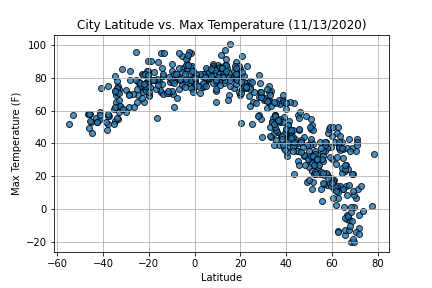

Summary: Latitude vs. Weather Phenomena

The purpose of this project was to analyze how various weather phenomena such as temperature, humidity, wind speed, and cloudiness change in relation to a location's distance from the Equator. Using an API call to openweathermap.org, I gathered weather information for 574 random cities around the globe. The weather information included latitude, longitude, max temperature, humidity, cloudiness, wind speeds, country in which the city is located, and the date the information was retrieved. Once the data for each of the 574 cities was collected, a CSV file titled cities.csv was created. After collecting and cleaning the appropriate data, Matplotlib was used to chart the various weather phenomena in each city in relation to the latitude of each city.